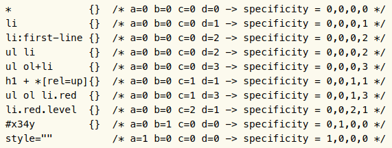

<!DOCTYPE html><html><head><meta charset="utf-8"><title>重新認識 CSS - Cascading &amp; Specificity | Titangene Blog</title><meta http-equiv="X-UA-Compatible" content="IE=edge"><meta name="viewport" content="width=device-width,initial-scale=1,maximum-scale=1"><meta name="HandheldFriendly" content="True"><meta name="apple-mobile-web-app-capable" content="yes"><meta name="author" content="Titangene"><link rel="shortcut icon" href="/favicon.ico"><link rel="alternate" href="/atom.xml" title="Titangene Blog"><meta name="description" content="CSS 可以在同份文件上使用多個 style sheet 來設定文件的樣式。如果你在不同 style sheet 內對同一個元素或屬性設定值時，就會 CSS 會透過 cascading 這個特性來解決這個衝突。本篇將介紹 CSS 的 Cascading 和 specificity。"><meta property="og:type" content="article"><meta property="og:title" content="重新認識 CSS - Cascading &amp; Specificity"><meta property="og:url" content="https://titangene.github.io/article/css-cascading-and-specificity.html"><meta property="og:site_name" content="Titangene Blog"><meta property="og:description" content="CSS 可以在同份文件上使用多個 style sheet 來設定文件的樣式。如果你在不同 style sheet 內對同一個元素或屬性設定值時，就會 CSS 會透過 cascading 這個特性來解決這個衝突。本篇將介紹 CSS 的 Cascading 和 specificity。"><meta property="og:locale" content="zh_TW"><meta property="og:image" content="https://titangene.github.io/images/cover/css.png"><meta property="article:published_time" content="2019-09-25T11:20:15.000Z"><meta property="article:modified_time" content="2020-02-09T14:01:29.000Z"><meta property="article:author" content="Titangene"><meta property="article:tag" content="IT 鐵人賽"><meta name="twitter:card" content="summary_large_image"><meta name="twitter:image" content="https://titangene.github.io/images/cover/css.png"><meta name="twitter:creator" content="@titangeneTW"><meta name="twitter:site" content="@titangene_blog"><meta property="fb:admins" content="100001106016019"><meta property="fb:app_id" content="2470546159839111"><meta property="og:image:width" content="1200"><meta property="og:image:height" content="630"><meta name="google-site-verification" content="AaJ39L7h-nWwJjXJMhAMtXSF6H6BUgGWXC80kYvLic8"><link href="https://fonts.googleapis.com/css2?family=Roboto&display=swap" rel="stylesheet"><link href="https://fonts.googleapis.com/css?family=Source+Code+Pro&display=swap" rel="stylesheet"><link rel="stylesheet" href="https://cdnjs.cloudflare.com/ajax/libs/font-awesome/5.13.0/css/all.min.css"><link rel="stylesheet" href="https://unpkg.com/gitalk/dist/gitalk.css"><link rel="stylesheet" href="/style.css"><script async src="https://www.googletagmanager.com/gtag/js?id=UA-129758206-1"></script><script>!function(a){function n(){dataLayer.push(arguments)}a.dataLayer=a.dataLayer||[],n("js",new Date),n("config","UA-129758206-1")}(window)</script><script>function setLoadingBarProgress(e){document.getElementById("loading-bar").style.width=e+"%"}</script><meta name="generator" content="Hexo 4.2.0"><link rel="alternate" href="/atom.xml" title="Titangene Blog" type="application/atom+xml"></head></html><body><div id="loading-bar-wrapper"><div id="loading-bar"></div></div><script>setLoadingBarProgress(20)</script><header class="l_header"><div class="wrapper"><div class="nav-main container container--flex"><a class="logo flat-box" href="/">Titangene Blog</a><div class="menu"><ul class="h-list"><li><a class="flat-box nav-home" href="/">Home</a></li><li><a class="flat-box nav-archives" href="/archives">Archives</a></li></ul><div class="underline"></div></div><div class="m_search"><form name="searchform" class="form u-search-form"><input type="text" class="input u-search-input" placeholder="Search"> <i class="fas fa-search"></i></form></div><ul class="switcher h-list"><li class="s-search"><a class="fas fa-search" href="javascript:void(0)"></a></li><li class="s-menu"><a class="fas fa-bars" href="javascript:void(0)"></a></li></ul></div><div class="nav-sub container container--flex"><a class="logo flat-box" href="/">Titangene Blog</a><ul class="switcher h-list"><li class="s-comment"><a class="far fa-comment-alt" href="javascript:void(0)"></a></li><li class="s-top"><a class="fas fa-arrow-up" href="javascript:void(0)"></a></li><li class="s-toc"><a class="fas fa-list-ol" href="javascript:void(0)"></a></li></ul></div></div></header><aside class="menu-phone"><nav><a href="/" class="nav-home nav">Home </a><a href="/archives" class="nav-archives nav">Archives</a></nav></aside><script>setLoadingBarProgress(40)</script><div class="l_body"><div class="container clearfix"><div class="l_main"><article id="post-css-cascading-and-specificity" class="post white-box article-type-post" itemscope itemprop="blogPost"><section class="meta"><h2 class="title"><a href="/article/css-cascading-and-specificity.html">重新認識 CSS - Cascading &amp; Specificity</a></h2><span class="post-time"><span class="post-meta-item-icon"><i class="fa fa-calendar"></i> </span><span class="post-meta-item-text">發表於</span> <time title="建立時間：2019-09-25 19:20:15" itemprop="dateCreated datePublished" datetime="2019-09-25T19:20:15+08:00">2019-09-25 </time><span class="post-meta-divider">|</span> <span class="post-meta-item-icon"><i class="fa fa-calendar-check"></i> </span><span class="post-meta-item-text">更新於</span> <time title="修改時間：2020-02-09 22:01:29" itemprop="dateModified" datetime="2020-02-09T22:01:29+08:00">2020-02-09</time></span> <span class="comments-count"><span class="post-meta-divider">|</span> <span class="post-meta-item-icon"><i class="fas fa-comment"></i> </span><a href="https://titangene.github.io/article/css-cascading-and-specificity.html#comments" class="article-comment-count">留言</a></span><div class="post-category"><span class="post-meta-item-icon"><i class="fa fa-folder"></i> </span><span class="post-meta-item-text">分類於</span> <span itemprop="about" itemscope itemtype="http://schema.org/Thing"><a href="/categories/css/" itemprop="url" rel="index"><span itemprop="name">CSS</span></a></span></div></section><section class="toc-wrapper"><h3>目錄</h3><ol class="toc"><li class="toc-item toc-level-2"><a class="toc-link" href="#前言"><span class="toc-text">前言</span></a></li><li class="toc-item toc-level-2"><a class="toc-link" href="#Cascading"><span class="toc-text">Cascading</span></a><ol class="toc-child"><li class="toc-item toc-level-3"><a class="toc-link" href="#Origin-and-Importance"><span class="toc-text">Origin and Importance</span></a></li><li class="toc-item toc-level-3"><a class="toc-link" href="#Specificity"><span class="toc-text">Specificity</span></a></li><li class="toc-item toc-level-3"><a class="toc-link" href="#Order-of-Appearance"><span class="toc-text">Order of Appearance</span></a></li></ol></li></ol></section><section class="article typo"><div class="article-entry" itemprop="articleBody"><p></p><p>CSS 可以在同份文件上使用多個 style sheet 來設定文件的樣式。如果你在不同 style sheet 內對同一個元素或屬性設定值時，就會 CSS 會透過 <a href="https://www.w3.org/TR/css-cascade-3/#cascade" target="_blank" rel="noopener">cascading</a> 這個特性來解決這個衝突。本篇將介紹 CSS 的 Cascading 和 specificity。</p><a id="more"></a><h2 id="前言"><a class="header-anchor" href="#前言"></a>前言</h2><blockquote><p>「重新認識 CSS」這個系列名稱的由來就如其名，我想要重新認識它。雖然以前就有學過 CSS，但這次想從 CSS Spec 中學到最原始的定義和內容，更加了解 CSS 的原理，讓我在切版的時候可以更加確定自己在做什麼，我踩到的雷只是因為我不夠了解它才會炸開。</p><p>在這 30 天的內容中，會將 Spec 內看到的資料整理成這個系列，也希望正在學 CSS 的各位可以更加了解它。另外我也會同時將文章發至我的 Blog，如果想直接看文內的程式碼 Demo 畫面，可以到我的 Blog 來看 😃。</p><p>本文同步發表於 iT 邦幫忙：<a href="https://ithelp.ithome.com.tw/articles/10220677" target="_blank" rel="noopener">重新認識 CSS - Cascading &amp; Specificity</a></p><p>「重新認識 CSS」系列文章發文於：</p><ul><li><a href="https://ithelp.ithome.com.tw/users/20117586/ironman/2617" target="_blank" rel="noopener">iT 邦幫忙</a></li><li><a href="https://titangene.github.io/tags/it-%E9%90%B5%E4%BA%BA%E8%B3%BD/">Titangene Blog</a></li></ul></blockquote><h2 id="Cascading"><a class="header-anchor" href="#Cascading"></a>Cascading</h2><p>cascade 接受給定 (given) 元素上的給定屬性的 declared value 的無序列表，根據如下所述按照其宣告的優先度對它們進行排序，並輸出一個 cascaded value</p><p>cascade 會使用各元素上屬性的 declared value 的無序列表，透過下面所述的 Cascading 流程，以宣告的優先度從高到低進行排序，並輸出一個 cascaded value：</p><ol><li>Origin and Importance</li><li>Specificity</li><li>Order of Appearance</li></ol><h3 id="Origin-and-Importance"><a class="header-anchor" href="#Origin-and-Importance"></a>Origin and Importance</h3><ul><li>Origin：根據宣告的<a href="https://www.w3.org/TR/css-cascade-3/#origin" target="_blank" rel="noopener">來源 (origin)</a></li><li>Importance：該屬性值是否被宣告為 <code>!important</code></li></ul><p>各種來源的優先度按降序 (高到低) 排列：</p><ol><li>Transition declarations <a href="https://www.w3.org/TR/css-transitions-1/" target="_blank" rel="noopener">CSS Transitions</a></li><li>Important user agent declarations</li><li>Important user declarations</li><li>Important author declarations</li><li>Animation declarations <a href="https://www.w3.org/TR/css-animations-1/" target="_blank" rel="noopener">CSS Animations Level 1</a></li><li>Normal author declarations</li><li>Normal user declarations</li><li>Normal user agent declarations</li></ol><h3 id="Specificity"><a class="header-anchor" href="#Specificity"></a>Specificity</h3><p>選擇器的 specificity 計算方式的背後是計算 <code>a</code>、<code>b</code>、<code>c</code> 和 <code>d</code> 個四個數字，此方法會分別在各個 selector 上計算，四個數字各別如下：</p><ul><li><code>a</code>：如果在直接在 HTML 元素上設定 <code>style</code> 屬性，那 <code>a = 1</code>，否則為 0</li><li><code>b</code>：計算使用 ID selector 的數量</li><li><code>c</code>：計算使用 class selector、attributes selector 和 pseudo-class 的數量</li><li><code>d</code>：計算使用 type selector 和 pseudo-element 的數量</li></ul><p>另外還有幾點要特別注意：</p><ul><li>specificity 會忽略 universal selector</li><li>如果你用 attributes selector 來 match <code>id</code> 屬性 (例如：<code>[id=titan]</code> )，也還是算成 attributes selector (也就是 <code>a = 0</code>、<code>b = 0</code>、<code>c = 1</code> 和 <code>d = 0</code> )</li></ul><p>下面是 <a href="https://www.w3.org/TR/CSS22/cascade.html#specificity" target="_blank" rel="noopener">CSS 2.2</a> 提供的 specificity 範例：</p><p></p><p>下面舉個實際的範例；</p><figure class="highlight html"><table><tr><td class="gutter"><pre><span class="line">1</span><br><span class="line">2</span><br><span class="line">3</span><br><span class="line">4</span><br><span class="line">5</span><br><span class="line">6</span><br><span class="line">7</span><br><span class="line">8</span><br></pre></td><td class="code"><pre><code class="hljs html"><span class="hljs-tag">&lt;<span class="hljs-name">head</span>&gt;</span><br>  <span class="hljs-tag">&lt;<span class="hljs-name">style</span> <span class="hljs-attr">type</span>=<span class="hljs-string">"text/css"</span>&gt;</span><br><span class="css">    <span class="hljs-selector-id">#titan</span> &#123; <span class="hljs-attribute">color</span>: red; &#125;</span><br>  <span class="hljs-tag">&lt;/<span class="hljs-name">style</span>&gt;</span><br><span class="hljs-tag">&lt;/<span class="hljs-name">head</span>&gt;</span><br><span class="hljs-tag">&lt;<span class="hljs-name">body</span>&gt;</span><br>  <span class="hljs-tag">&lt;<span class="hljs-name">p</span> <span class="hljs-attr">id</span>=<span class="hljs-string">"titan"</span> <span class="hljs-attr">style</span>=<span class="hljs-string">"color: green"</span>&gt;</span><br><span class="hljs-tag">&lt;/<span class="hljs-name">body</span>&gt;</span><br></code></pre></td></tr></table></figure><p>因為 <code>p</code> 元素有設定 <code>style</code> 屬性，會覆蓋 <code>style</code> 元素中 以 ID selector <code>#titan</code> 的宣告 (因為 <code>style</code> 屬性的 specificity 更高)，所以 <code>p</code> 元素的文字結果為綠色。</p><h3 id="Order-of-Appearance"><a class="header-anchor" href="#Order-of-Appearance"></a>Order of Appearance</h3><p>越放在 HTML 最後的宣告優先度越高：</p><ul><li><a href="https://www.w3.org/TR/css-cascade-3/#at-ruledef-import" target="_blank" rel="noopener">imported style sheet</a> 中的宣告會按順序來排序</li><li>HTML 外部連結的 style sheet 中的宣告會按順序來排序</li><li><code>style</code> 屬性的宣告是根據 <code>style</code> 屬性出現在該元素的文件順序來排序，並且全部放在任何 style sheet 之後</li></ul><p>資料來源：</p><ul><li><a href="https://www.w3.org/TR/CSS22/cascade.html" target="_blank" rel="noopener">CSS 2.2 - 6. Assigning property values, Cascading, and Inheritance</a></li><li><a href="https://www.w3.org/TR/css-cascade-3/" target="_blank" rel="noopener">CSS Cascading and Inheritance Level 3</a></li></ul></div><div class="article-tags tags"><a href="/tags/it-%E9%90%B5%E4%BA%BA%E8%B3%BD/" title="IT 鐵人賽">IT 鐵人賽</a></div></section><div class="article-share-links"><span>分享：</span> <a class="fab fa-facebook-f" title="Facebook" target="_blank" href="javascript:window.open('https://www.facebook.com/sharer.php?u=https%3A%2F%2Ftitangene.github.io%2Farticle%2Fcss-cascading-and-specificity.html', 'Share on Facebook','width=600, height=600')"></a> <a class="fab fa-twitter" title="Twitter" target="_blank" href="javascript:window.open('https://twitter.com/share?url=https%3A%2F%2Ftitangene.github.io%2Farticle%2Fcss-cascading-and-specificity.html&amp;text=重新認識 CSS - Cascading &amp; Specificity&amp;hashtags=IT鐵人賽&amp;via=titangene_blog', 'Share on Twitter','width=600, height=260')"></a> <a class="fab fa-linkedin-in" title="Linkedin" target="_blank" href="javascript:window.open('https://www.linkedin.com/shareArticle?mini=true&amp;url=https%3A%2F%2Ftitangene.github.io%2Farticle%2Fcss-cascading-and-specificity.html&amp;title=重新認識 CSS - Cascading &amp; Specificity', 'Share on Linkedin','width=600, height=600')"></a> <a class="fab fa-facebook-messenger" title="Facebook Messenger" target="_blank" href="javascript:window.open('http://www.facebook.com/dialog/send?app_id=2470546159839111&amp;link=https%3A%2F%2Ftitangene.github.io%2Farticle%2Fcss-cascading-and-specificity.html&amp;display=popup&amp;redirect_uri=https%3A%2F%2Fwww.facebook.com%2Fdialog%2Freturn%2Fclose%23_%3D_', 'Send in Messenger','width=600, height=600')"></a> <a class="fab fa-telegram-plane" href="https://telegram.me/share/url?url=https%3A%2F%2Ftitangene.github.io%2Farticle%2Fcss-cascading-and-specificity.html&text=重新認識 CSS - Cascading &amp; Specificity" target="_blank"></a></div><nav id="article-nav"><a href="/article/css-value-processing.html" id="article-nav-prev" class="article-nav-link-wrap" title="重新認識 CSS - CSS 如何處理屬性值" rel="prev"><strong class="article-nav-caption">Prev</strong><p class="article-nav-title">重新認識 CSS - CSS 如何處理屬性值</p><i class="fas fa-angle-left"></i> </a><a href="/article/css-media-type.html" id="article-nav-next" class="article-nav-link-wrap" title="重新認識 CSS - media type" rel="next"><strong class="article-nav-caption">Next</strong><p class="article-nav-title">重新認識 CSS - media type</p><i class="fas fa-angle-right"></i></a></nav><section id="list_related_posts"><h2>相關文章</h2><ul class="related-posts"><li class="related-posts-item"><a class="related-posts-link" href="/article/css-containing-block.html">重新認識 CSS - Containing block</a><div class="related-posts-item-abstract">本篇將介紹 CSS 的 Containing block。前言「重新認識 CSS」這個系列名稱的由來就如其名，我想要重新認識它。雖然以前就有學過 CSS，但這次想從 CSS Spec 中學到最原始的定義和內容，更加了解</div></li><li class="related-posts-item"><a class="related-posts-link" href="/article/css-introduction.html">重新認識 CSS - CSS 簡介</a><div class="related-posts-item-abstract">CSS 是 Cascading Style Sheets 的縮寫，是一種 style sheet (樣式表) 語言，可將自訂的樣式 (例如：字體、顏色) 附加在 HTML 文件上。這篇會先簡介 CSS，以及如何在 HTM</div></li><li class="related-posts-item"><a class="related-posts-link" href="/article/css-display.html">重新認識 CSS - display</a><div class="related-posts-item-abstract">本篇將介紹 CSS 中的各種 display 屬性值。前言「重新認識 CSS」這個系列名稱的由來就如其名，我想要重新認識它。雖然以前就有學過 CSS，但這次想從 CSS Spec 中學到最原始的定義和內容，更加了解 CS</div></li><li class="related-posts-item"><a class="related-posts-link" href="/article/css-selector-1.html">重新認識 CSS - Simple Selector & Groups of selector</a><div class="related-posts-item-abstract">Selector (選擇器) 可用來選擇 HTML 和 XML 文件中的節點，並將樣式屬性綁定到文件 (HTML 和 XML) 中的元素上。當選擇器與某元素 match 的時候，就可以對選到的元素進行 CSS 樣式設定。</div></li><li class="related-posts-item"><a class="related-posts-link" href="/article/css-position.html">重新認識 CSS - position</a><div class="related-posts-item-abstract">本篇將介紹 CSS 的 position 屬性，包括 static、relative、absolute 和 fixed。前言「重新認識 CSS」這個系列名稱的由來就如其名，我想要重新認識它。雖然以前就有學過 CSS，但這</div></li><li class="related-posts-item"><a class="related-posts-link" href="/article/css-selector-pseudo-element.html">重新認識 CSS - Pseudo-element (偽元素)</a><div class="related-posts-item-abstract">Selector (選擇器) 可用來選擇 HTML 和 XML 文件中的節點，並將樣式屬性綁定到文件 (HTML 和 XML) 中的元素上。當選擇器與某元素 match 的時候，就可以對選到的元素進行 CSS 樣式設定。</div></li></ul></section><section class="comments" id="comments"><h2>討論區</h2><div id="gitalk-container"></div></section></article><script>window.subData={title:"重新認識 CSS - Cascading &amp; Specificity",tools:!0}</script></div><aside class="l_side"><section class="m_widget about"><div class="avatar-section"><style>.avatar-cover{background:url(/images/avatar_cover.jpg) 0 10%/cover no-repeat}</style><div class="avatar-cover"></div></div><div class="header">Titangene</div><div class="content"><div class="desc">利用 blog 紀錄學習歷程</div></div><div class="content"><meta itemprop="url" content="https://titangene.github.io"><div class="social-wrapper"><a itemprop="sameAs" href="https://github.com/titangene" class="social github" target="_blank" rel="external"><span class="fab fa-github-alt"></span> </a><a itemprop="sameAs" href="https://www.facebook.com/titangene.tw" class="social facebook" target="_blank" rel="external"><span class="fab fa-facebook-square"></span> </a><a itemprop="sameAs" href="https://www.instagram.com/titangene/" class="social instagram" target="_blank" rel="external"><span class="fab fa-instagram"></span> </a><a itemprop="sameAs" href="https://www.flickr.com/photos/titangene" class="social flickr" target="_blank" rel="external"><span class="fab fa-flickr"></span> </a><a itemprop="sameAs" href="/atom.xml" class="social rss" target="_blank" rel="external"><span class="fas fa-rss"></span></a></div></div></section><section class="m_widget facebook_page"><div class="fb-page" data-href="https://www.facebook.com/titangene.blog/" data-width="250" data-small-header="false" data-adapt-container-width="false" data-hide-cover="false" data-show-facepile="true"><blockquote cite="https://www.facebook.com/titangene.blog/" class="fb-xfbml-parse-ignore"><p><a href="https://www.facebook.com/titangene.blog/" class="social facebook" target="_blank"><span class="fab fa-facebook-square"></span></a></p><p><a href="https://www.facebook.com/titangene.blog/" target="_blank" rel="noopener">Titangene Blog</a></p><p>Loading...</p></blockquote></div></section><section class="m_widget recent"><div class="header">Recents</div><div class="content"><ul class="entry"><li><a itemprop="url" class="flat-box" href="/article/jest-jquery-dom-testing.html"><time>2020-08-02</time><div class="name">Jest：DOM 測試 (jQuery)</div></a></li><li><a itemprop="url" class="flat-box" href="/article/jest-manual-mocks.html"><time>2020-07-26</time><div class="name">Jest：Manual Mocks</div></a></li><li><a itemprop="url" class="flat-box" href="/article/jest-timer-mocks.html"><time>2020-07-19</time><div class="name">Jest：Timer Mocks</div></a></li><li><a itemprop="url" class="flat-box" href="/article/jest-snapshot-testing.html"><time>2020-07-12</time><div class="name">Jest：Snapshot 測試</div></a></li><li><a itemprop="url" class="flat-box" href="/article/jest-mock-function.html"><time>2020-07-05</time><div class="name">Jest：Mock 函數</div></a></li><li><a itemprop="url" class="flat-box" href="/article/jest-async-test.html"><time>2020-06-28</time><div class="name">Jest：非同步測試</div></a></li><li><a itemprop="url" class="flat-box" href="/article/jest-setup-teardown.html"><time>2020-06-21</time><div class="name">Jest：Setup &amp; Teardown</div></a></li></ul></div></section></aside><script>setLoadingBarProgress(60)</script></div></div><footer id="footer" class="clearfix"><div class="social-wrapper"><a href="https://github.com/titangene" class="social github" target="_blank" rel="external"><span class="fab fa-github-alt"></span> </a><a href="https://www.facebook.com/titangene.tw" class="social facebook" target="_blank" rel="external"><span class="fab fa-facebook-square"></span> </a><a href="https://www.instagram.com/titangene/" class="social instagram" target="_blank" rel="external"><span class="fab fa-instagram"></span> </a><a href="https://www.flickr.com/photos/titangene" class="social flickr" target="_blank" rel="external"><span class="fab fa-flickr"></span> </a><a href="/atom.xml" class="social rss" target="_blank" rel="external"><span class="fas fa-rss"></span></a></div><div>© 2018 - 2020 <span itemprop="copyrightHolder">Titangene</span></div><div>Powered by <a href="https://hexo.io/" target="_blank" class="codename" rel="external noopener">Hexo</a> - Theme <a href="https://github.com/stkevintan/hexo-theme-material-flow" target="_blank" class="codename" rel="external noopener">MaterialFlow</a></div><div><a rel="license noopener" href="http://creativecommons.org/licenses/by-nc-sa/4.0/" target="_blank" rel="external noopener"></a></div></footer><script>setLoadingBarProgress(80)</script><script src="//cdnjs.cloudflare.com/ajax/libs/jquery/2.1.4/jquery.min.js"></script><script src="https://cdnjs.cloudflare.com/ajax/libs/clipboard.js/2.0.0/clipboard.min.js"></script><script src="https://unpkg.com/gitalk/dist/gitalk.min.js"></script><script src="/js/jquery.fitvids.js"></script><script>var SEARCH_SERVICE="hexo",ROOT="/";ROOT.endsWith("/")||(ROOT+="/")</script><script src="/js/search.js"></script><script src="/js/app.js"></script><script src="/js/clipboard-use.js"></script><script type="text/javascript">var gitalk=new Gitalk({clientID:"dd1684f31ee17e25c22b",clientSecret:"4b51bb4a5996b04d58821a6e3da8558f23da4cdf",id:window.location.pathname,repo:"hexo-blog",owner:"titangene",admin:"titangene",distractionFreeMode:"true"});gitalk.render("gitalk-container")</script><div id="fb-root"></div><script>window.fbAsyncInit=function(){FB.init({appId:"2470546159839111",autoLogAppEvents:!0,xfbml:!0,version:"v2.11"}),FB.AppEvents.logPageView()},function(e,n,t){var o,s=e.getElementsByTagName(n)[0];e.getElementById(t)||((o=e.createElement(n)).id=t,o.src="//connect.facebook.net/zh_TW/sdk.js",s.parentNode.insertBefore(o,s))}(document,"script","facebook-jssdk")</script><script>setLoadingBarProgress(100)</script></body>